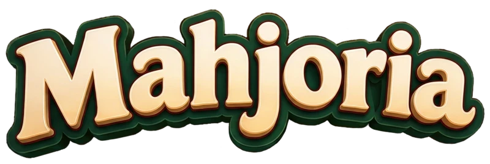

A whole planet lies under mahjong tiles. Match pairs, clear each parcel and watch the land rise underneath.

One planet, seen from three heights
Pinch out and the parcel you are playing becomes part of a tiled landscape, then a globe in space. Everything you open stays open.
- 400 km
The globe
Your opened land shows up as green on a planet still covered in ivory tiles.
- 3 km
The landscape
Stack heights follow the land beneath, so you can guess where hills and lakes will appear.
- 0 m
Your parcel
Big, clear tiles sized for a phone screen. Finish one and the ground rises, sometimes with a discovery.
Clear a parcel right here
Tap two tiles with the same symbol. Each pair you match opens the ground below. In the game, every parcel you finish adds 108 m² to your world.
Majold, the coin of the planet
You earn Majold by clearing parcels, collecting stars and coming back each day. Spend it on hints and shuffles when a parcel gets tricky.
No ads between turns. An ad plays only when you choose to watch one for Majold.